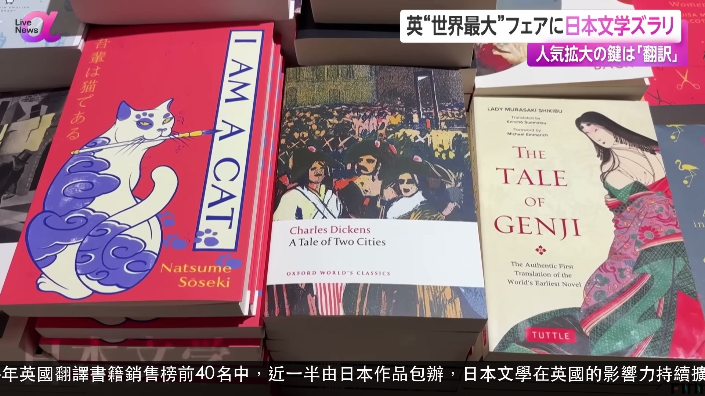
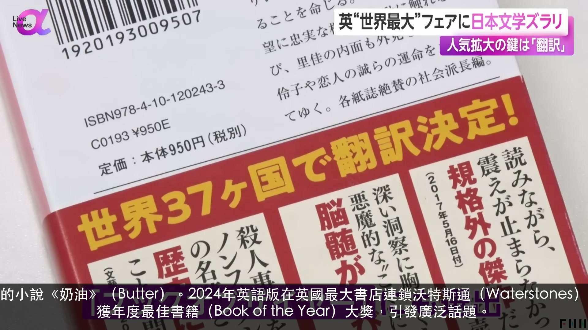
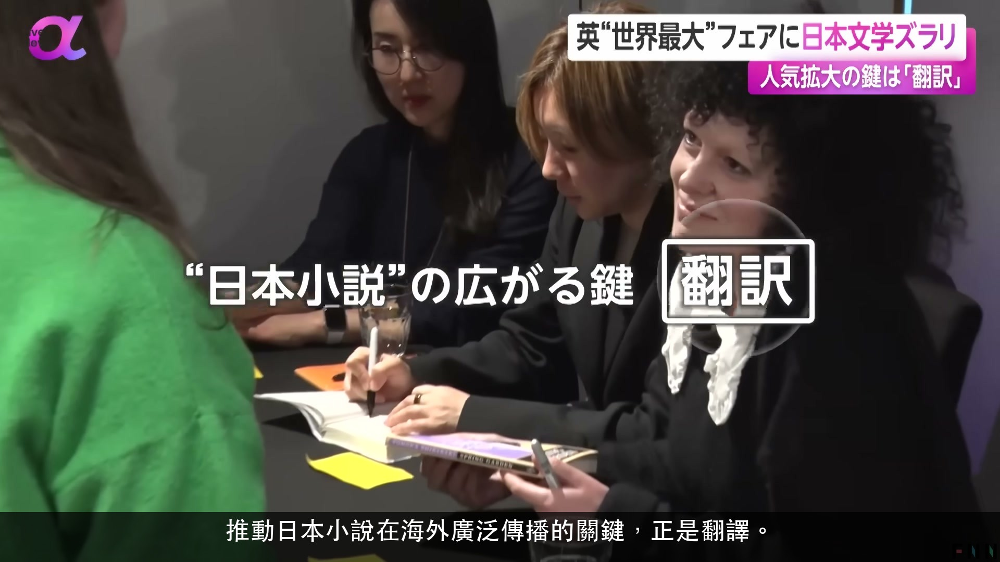

📚 英國「世界最大級」書展日本文學大放異彩——人氣擴大的關鍵是「翻譯」（2026.03.17）
🎬 8 句金句
🌐 日文 → 繁中
📅 2026.03.17
▶ 觀看原片
⏱ 00:00:48
如今，現代日本文學在海外的關注度不斷攀升，其中尤以英國的人氣最為突出。
今、海外では現代日本文学への関心が高まっていて、中でもイギリスでは高い人気を集めています。

⏱ 00:01:14
2024年英國翻譯書籍銷售榜前40名中，近一半由日本作品包辦，日本文學在英國的影響力持續擴大。
2024年の翻訳上位40作の半分近くを日本作品が占めるなど、イギリスで広がりを見せる日本文学。

⏱ 00:01:26
象徵這股熱潮的，是柚木麻子的小說《奶油》（Butter）。2024年英語版在英國最大書店連鎖沃特斯通（Waterstones）奪得年度最暢銷書寶座，並榮獲年度最佳書籍（Book of the Year）大獎，引發廣泛話題。
この流れを象徴するのが柚月朝子さんの『バター』です。2024年には英語版がイギリスの書店チェーン、ウォーターストーンズで年間で最も売れた本となり、ブック・オブ・ザ・イヤーにも選ばれるなど大きな話題になりました。

⏱ 00:02:08
推動日本小說在海外廣泛傳播的關鍵，正是翻譯。
こうした日本小説の広がりの鍵を握るのが翻訳です。
⏱ 00:02:14
來訪倫敦的日本作家柴崎友香表示，每部作品獨特的語氣與文體、日語特有的深度及方言細膩感，即便AI翻譯技術日新月異，目前仍無法被充分再現。
ロンドンを訪れた作家・柴崎友香さんは、作品ごとの声や文体、日本語特有の深みや方言のニュアンスは、現時点ではAIによる翻訳が急速に進化する中でも十分に再現できないと考えています。
⏱ 00:02:35
她強調，翻譯絕非單純的文字替換，而是作者與譯者之間所誕生的溝通與對話本身。
翻訳は単なる言葉の置き換えではなく、書き手と訳者との間に生まれるコミュニケーションそのものだと言います。
⏱ 00:02:44
譯者真正擁有的那種獨到感性至關重要。每部小說都有自己的聲音，如何把這份聲音傳遞出去，我相信譯者都在絞盡腦汁思考如何做到。不僅僅是傳達文字的意思，而是把那種體驗一起傳遞——這才是翻譯最重要的使命。
本当にその人自身が持っている感覚が非常に重要になってくる。それぞれの小説が持っている声をどうやって伝えるかということを、翻訳される方はすごくどういう風に工夫するかを考えてらっしゃると思う。ただ言葉の意味を伝えるだけじゃなく、そういう体験を伝えるというのはやっぱりすごく重要な役割だと思う。
⏱ 00:03:19
要讓世界各地的讀者體會日本文學中那些引人共鳴的留白之美與想像的樂趣，翻譯者的感性與細膩巧思不可或缺。希望獲得優秀譯者加持的日本小說，能在海外持續收穫更多人的喜愛。
日本文学に気づく共鳴の余白を味わい、想像する楽しみを世界に広げるには翻訳の感性や繊細な工夫が欠かせません。優れた翻訳を得た日本の小説が海外でより愛されていくといいですね。